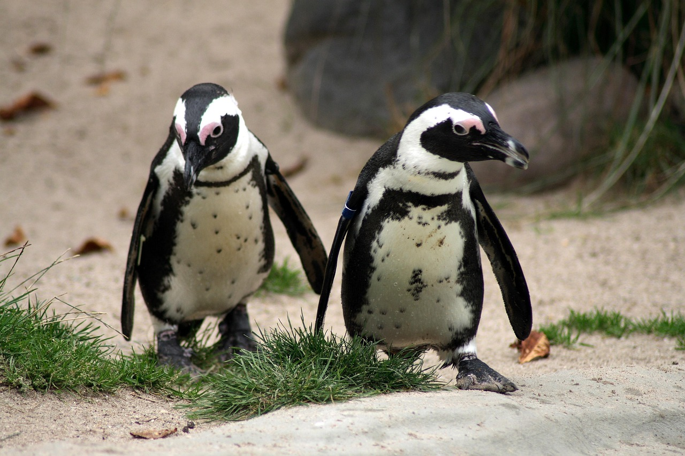
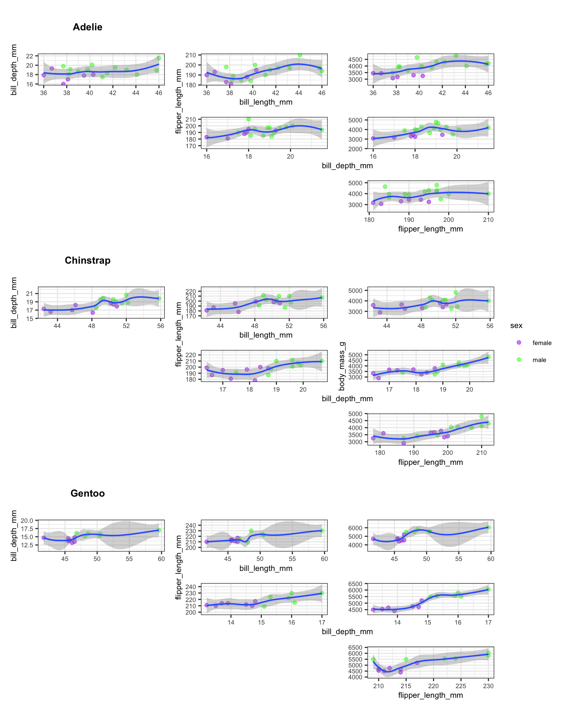

library(palmerpenguins)
library(tidyverse)
library(purrr)
library(patchwork)
library(rlang)
library(grid)Functional Plot Generation with purrr
r
data-visualization
I did not really know how to programmatically generate multiple plots from grouped data until I discovered purrr’s map2 and pmap functions – this post walks through the approach step by step using Palmer Penguins.

Generating publication-quality plot grids without writing the same code three times.
Introduction
I did not really know how to programmatically generate multiple plots from grouped data until I started working with the Palmer Penguins dataset. The task seemed straightforward: produce scatter plots for every pairwise combination of numeric variables, separately for each penguin species, and then assemble them into a single coherent grid.
My first instinct was to copy-paste code for each species and each variable pair. That approach collapsed quickly once I counted the combinations: three species, four numeric variables, six pairwise combinations per species – eighteen plots total. Copy-pasting eighteen ggplot calls is tedious, brittle, and nearly impossible to maintain.
The purrr package solved this problem cleanly. By splitting the data by species and mapping a plotting function over every variable combination, I could generate all eighteen plots with a single pipeline and assemble them into a structured grid using patchwork. This post documents that workflow.
Motivations
- I was tired of manually duplicating ggplot code for each subgroup in a dataset.
- I wanted to see all pairwise relationships between numeric features at a glance, stratified by species.
- I needed a workflow that could scale: if a fourth species appeared in the data, the code should handle it without modification.
- I was curious whether
purrr::pmapcould handle the three-argument case (x variable, y variable, grouping variable) cleanly. - I wanted practice assembling complex multi-panel layouts with
patchworkbeyond simple+and/operators.
Objectives
- Split a data frame by a categorical variable (species) and iterate over the resulting list with
map2. - Use
pmapto map a plotting function across all pairwise combinations of numeric columns. - Assemble the resulting list of plots into a structured grid using
patchwork::wrap_plotswith a custom design layout string. - Produce a final composite figure with species labels, shared legends, and collected axis titles.
I am documenting my learning process here. Errors and better approaches are welcome; see the contact section below.

Prerequisites and Setup
This post assumes familiarity with ggplot2 and basic tidyverse operations. The key packages are:
purrrfor functional iteration (map2,pmap)patchworkfor plot composition (wrap_plots,plot_layout,plot_spacer)palmerpenguinsfor the datasetrlangfor tidy evaluation (.data[[var]]pronoun)
The Palmer Penguins dataset contains measurements for 344 penguins across three species (Adelie, Chinstrap, Gentoo) from three islands in the Palmer Archipelago, Antarctica.
penguins |>
drop_na() |>
count(species) |>
knitr::kable(
caption = "Observations per species after
removing missing values."
)| species | n |
|---|---|
| Adelie | 146 |
| Chinstrap | 68 |
| Gentoo | 119 |
What is Functional Plot Generation?
Functional plot generation means treating plot creation as a function and then applying that function systematically across combinations of inputs. Instead of writing:
# Do not do this for 18 combinations
plot_adelie_bill_flipper <- ggplot(...)
plot_adelie_bill_body <- ggplot(...)
plot_adelie_bill_depth <- ggplot(...)
# ... 15 more timesone writes a single plotting function and lets purrr call it for every combination of species, x-variable, and y-variable. The output is a list of ggplot objects that can be arranged into any layout.
Think of it like a mail merge: the template is defined once and the data fills in the blanks.
Getting Started: Preparing the Data
The first step is to sample from the penguins data and split it into a named list by species. We also compute all pairwise combinations of the four numeric columns (bill_length_mm, bill_depth_mm, flipper_length_mm, body_mass_g).
set.seed(42)
df_sampled <- penguins |>
sample_n(50) |>
drop_na()
df_by_species <- split(df_sampled, df_sampled$species)
numeric_cols <- names(df_sampled)[3:6]
pairs <- t(combn(numeric_cols, 2))
colnames(pairs) <- c("x_var", "y_var")
pair_grid <- as.data.frame(pairs) |>
mutate(group_var = "sex")The pair_grid data frame now holds six rows, one for each pairwise combination. Each row names an x-variable, a y-variable, and a grouping variable (sex) for color coding within each species panel.
pair_grid |>
knitr::kable(
caption = "All pairwise variable combinations
to plot."
)| x_var | y_var | group_var |
|---|---|---|
| bill_length_mm | bill_depth_mm | sex |
| bill_length_mm | flipper_length_mm | sex |
| bill_length_mm | body_mass_g | sex |
| bill_depth_mm | flipper_length_mm | sex |
| bill_depth_mm | body_mass_g | sex |
| flipper_length_mm | body_mass_g | sex |
Building the Plotting Function
The core of the workflow is a single function that accepts variable names as strings and a data frame, then returns a ggplot object. The .data[[var]] pronoun from rlang allows column selection by string name inside aes().
make_scatter <- function(x_var, y_var,
group_var, species_name,
df) {
df |>
ggplot(aes(
x = .data[[x_var]],
y = .data[[y_var]]
)) +
geom_point(
aes(color = .data[[group_var]]),
alpha = 0.5
) +
geom_smooth(
method = "loess",
se = TRUE,
linewidth = 0.7
) +
scale_color_manual(
values = c("purple", "green", "red")
) +
theme_bw() +
theme(text = element_text(size = 8))
}Two design choices deserve explanation. First, geom_smooth(method = "loess") adds a local regression line so we can see nonlinear trends. Second, the function does not set titles (those come from the grid layout labels). Keeping the function minimal makes it reusable across different layouts.

Mapping Across Species and Variable Pairs
This is the heart of the approach. We use map2 to iterate over the list of species data frames and their names simultaneously. Inside that outer loop, pmap iterates over every row of pair_grid, calling make_scatter with the appropriate variable names.
all_plots <- df_by_species |>
map2(names(df_by_species), function(df, spc) {
pair_grid |>
pmap(function(x_var, y_var, group_var) {
make_scatter(
x_var, y_var, group_var, spc, df
)
})
})The result all_plots is a nested list: the outer level has three elements (one per species), and each inner level has six elements (one per variable pair). That gives us eighteen ggplot objects total, organized by species.
cat(
"Species:", length(all_plots), "\n",
"Plots per species:", length(all_plots[[1]]), "\n",
"Total plots:", sum(lengths(all_plots)), "\n"
)Species: 3
Plots per species: 6
Total plots: 18 Assembling the Grid with Patchwork
The final step is arranging all eighteen plots into a structured grid. I want each species to occupy one row group, with a text label identifying the species. The patchwork package supports custom layout strings where each letter maps to a named plot element.
Extracting Individual Plots
First, we pull every plot out of the nested list and assign readable names.
p1 <- all_plots[[1]][[1]]
p2 <- all_plots[[1]][[2]]
p3 <- all_plots[[1]][[3]]
p4 <- all_plots[[1]][[4]]
p5 <- all_plots[[1]][[5]]
p6 <- all_plots[[1]][[6]]
p7 <- all_plots[[2]][[1]]
p8 <- all_plots[[2]][[2]]
p9 <- all_plots[[2]][[3]]
p10 <- all_plots[[2]][[4]]
p11 <- all_plots[[2]][[5]]
p12 <- all_plots[[2]][[6]]
p13 <- all_plots[[3]][[1]]
p14 <- all_plots[[3]][[2]]
p15 <- all_plots[[3]][[3]]
p16 <- all_plots[[3]][[4]]
p17 <- all_plots[[3]][[5]]
p18 <- all_plots[[3]][[6]]Defining the Layout
The layout string below arranges plots in an upper triangular pattern for each species, with text labels (X, Y, Z) marking each species group. Each letter in the string maps to one named plot element in wrap_plots.
layout_string <- "
X##
ABC
#DE
##F
Y##
GHI
#JK
##L
Z##
MNO
#PQ
##R
"The # characters represent empty cells. This produces a staircase pattern: three plots in the first row, two in the second, one in the third (mirroring the upper triangle of a pairwise comparison matrix).
Composing the Final Figure
We create text labels for each species using grid::textGrob and pass everything to wrap_plots.
label_sp1 <- grid::textGrob(
names(df_by_species)[1],
gp = gpar(fontsize = 10, fontface = "bold")
)
label_sp2 <- grid::textGrob(
names(df_by_species)[2],
gp = gpar(fontsize = 10, fontface = "bold")
)
label_sp3 <- grid::textGrob(
names(df_by_species)[3],
gp = gpar(fontsize = 10, fontface = "bold")
)
composite <- wrap_plots(
X = label_sp1,
A = p1, B = p2, C = p3,
D = p4, E = p5, F = p6,
Y = label_sp2,
G = p7, H = p8, I = p9,
J = p10, K = p11, L = p12,
Z = label_sp3,
M = p13, N = p14, O = p15,
P = p16, Q = p17, R = p18,
design = layout_string
) +
plot_layout(
guides = "collect",
axis_titles = "collect"
) +
theme(
legend.position = "bottom",
legend.direction = "horizontal",
text = element_text(size = 8)
)
composite
The guides = "collect" argument consolidates duplicate legends into a single shared legend at the bottom. The axis_titles = "collect" argument prevents repeated axis labels across panels. Together, these two settings produce a clean, readable composite figure.
Things to Watch Out For
Variable types matter. The
.data[[var]]pronoun works only when the column name is a string. Passing a symbol instead produces cryptic subscription errors.Missing data propagates. Omitting
drop_na()before splitting leavesNArows in some species subsets, causinggeom_smoothto warn about removed observations.Layout string alignment. Every row in the
patchworklayout string must have the same number of characters. A misaligned row silently produces an incorrect layout.Global environment side effects. The original draft used
assign(..., envir = .GlobalEnv)inside the plotting function. This is fragile and pollutes the workspace. Returning the plot object and storing it in a list is cleaner and more predictable.Sample size per species. When sampling 50 rows from the full dataset, some species may end up with very few observations. For production analyses, use the full dataset or stratified sampling to ensure adequate representation.
What Did We Learn?
Lessons Learned
Conceptual Understanding:
- Pairwise scatter plot matrices provide a rapid visual summary of relationships between continuous features, but they scale quadratically: four variables produce six pairs, five produce ten.
- Stratification by species reveals within-group patterns that pooled analyses obscure (Simpson’s paradox).
- LOESS smoothers are useful for initial exploration but carry no inferential interpretation without further modeling.
- The upper-triangular layout avoids redundancy by showing each pair exactly once.
Technical Skills:
purrr::map2iterates over two lists in parallel – ideal for pairing data frames with their names.purrr::pmapgeneralizes to arbitrary numbers of arguments by iterating over rows of a data frame.rlang::.data[[var]]enables column selection by string name insideaes(), which is essential for programmatic ggplot construction.patchwork::wrap_plotswith a customdesignstring provides fine-grained control over multi-panel layouts.
Gotchas and Pitfalls:
- Forgetting
drop_na()beforesplit()produces species-level data frames with missing rows that cause warnings ingeom_smooth. - The
plot_spacer()function is useful for empty cells, but the#character in the design string is more readable for fixed layouts. assign()to.GlobalEnvinside mapped functions creates hard-to-debug side effects. Always return values from functions and collect them in lists.scale_color_manualrequires the correct number of color values matching the levels of the grouping variable.
Limitations
- The sample of 50 penguins is small. Some species may have fewer than 10 observations, making LOESS fits unreliable.
- The grouping variable (sex) is hard-coded. A more general approach would accept the grouping variable as a parameter.
- The layout string is manually crafted for exactly three species and six variable pairs. Adding a fourth species or fifth numeric variable requires rewriting the layout.
- No statistical tests accompany the visual exploration. The plots show associations but do not quantify significance or effect size.
- The color palette (purple, green, red) is not colorblind-friendly. Production code should use a palette validated for accessibility.
Opportunities for Improvement
- Replace the hard-coded layout string with a function that generates the design string dynamically based on the number of species and variable pairs.
- Add correlation coefficients as text annotations inside each scatter plot panel.
- Use
GGally::ggpairsas a comparison point – it handles pairwise plots natively, though with less layout flexibility. - Implement stratified sampling with
dplyr::slice_sample(n, by = species)to ensure balanced representation. - Replace the manual plot extraction (p1 through p18) with a programmatic approach using
list_flattenand named assignment. - Switch to a colorblind-friendly palette such as
viridisor the Okabe-Ito palette.
Wrapping Up
This post demonstrated how purrr::map2 and purrr::pmap can replace copy-pasted ggplot code with a single functional pipeline. The key insight is that plots are objects that can be stored in lists, passed to functions, and assembled programmatically.
The approach worked well for the Palmer Penguins data. Starting from a single plotting function and a table of variable combinations, we generated eighteen scatter plots and arranged them into a structured grid that reveals within-species patterns. The total code is compact enough to fit in a single script, yet flexible enough to adapt to new datasets.
When working with grouped data and finding repetitive ggplot code, this pattern is worth trying:
- Split the data by your grouping variable.
- Define a single plotting function that accepts column names as strings.
- Map the function across all combinations using
pmap. - Assemble the resulting list with
patchwork.
See Also
- Automating exploratory plots with ggplot2 and purrr: Ariel Muldoon’s tutorial on the same pattern with detailed examples.
- Principal components and penguins: PCA as an alternative to pairwise scatter plots for high-dimensional penguin data.
- purrr documentation: Official reference for
map,map2, andpmap. - patchwork documentation: Guide to plot composition and layout design.
- Programming with dplyr: Background on
.data[[var]]and tidy evaluation.
Reproducibility
This analysis uses the palmerpenguins built-in dataset and requires no external data files. To reproduce:
quarto render index.qmdSession information:
sessionInfo()R version 4.6.1 (2026-06-24)
Platform: aarch64-apple-darwin25.4.0
Running under: macOS Tahoe 26.6.2
Matrix products: default
BLAS: /opt/homebrew/Cellar/openblas/0.3.34/lib/libopenblasp-r0.3.34.dylib
LAPACK: /opt/homebrew/Cellar/r/4.6.1/lib/R/lib/libRlapack.dylib; LAPACK version 3.12.1
locale:
[1] en_US.UTF-8/en_US.UTF-8/en_US.UTF-8/C/en_US.UTF-8/en_US.UTF-8
time zone: America/Los_Angeles
tzcode source: internal
attached base packages:
[1] grid stats graphics grDevices utils datasets methods
[8] base
other attached packages:
[1] rlang_1.3.0 patchwork_1.3.2 lubridate_1.9.5
[4] forcats_1.0.1 stringr_1.6.0 dplyr_1.2.1
[7] purrr_1.2.2 readr_2.2.0 tidyr_1.3.2
[10] tibble_3.3.1 ggplot2_4.0.3 tidyverse_2.0.0
[13] palmerpenguins_0.1.1
loaded via a namespace (and not attached):
[1] Matrix_1.7-5 gtable_0.3.6 jsonlite_2.0.0 compiler_4.6.1
[5] tidyselect_1.2.1 parallel_4.6.1 splines_4.6.1 scales_1.4.0
[9] yaml_2.3.12 fastmap_1.2.0 lattice_0.22-9 R6_2.6.1
[13] labeling_0.4.3 generics_0.1.4 knitr_1.51 htmlwidgets_1.6.4
[17] pillar_1.11.1 RColorBrewer_1.1-3 tzdb_0.5.0 stringi_1.8.9
[21] xfun_0.58 S7_0.2.2 otel_0.2.0 timechange_0.4.0
[25] cli_3.6.6 mgcv_1.9-4 withr_3.0.3 magrittr_2.0.5
[29] digest_0.6.39 hms_1.1.4 nlme_3.1-169 lifecycle_1.0.5
[33] vctrs_0.7.3 evaluate_1.0.5 glue_1.8.1 farver_2.1.2
[37] rmarkdown_2.31 tools_4.6.1 pkgconfig_2.0.3 htmltools_0.5.9 Let’s Connect
- GitHub: rgt47
- Twitter/X: @rgt47
- LinkedIn: Ronald Glenn Thomas
- Email: rgtlab.org/contact
I would enjoy hearing from you if:
- An error or a better approach to any of the code in this post comes to mind.
- There are suggestions for topics to see covered.
- The interest is in discussing R programming, data science, or reproducible research.
- There are questions about anything in this tutorial.
- The goal is simply to say hello and connect.